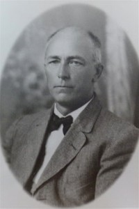
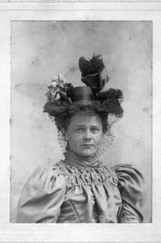

James M. L. Evenson
M, #24776, f. omtrent 1929, d. 1986
Foreldre
Biografi
James M. L. Evenson ble født omtrent 1929 på/i Minnesota, USA. Han døde i 1986 på/i Saint Paul, Ramsey County, Minnesota, USA.
James M. L. Evenson had reference number 2891.
| Sist redigert |
8 mars 2026 10:51:33 |
| Slektskap | 6-menning 2 ganger forskjøvet til Håkon Wahl |
Glenn Herman Thoreen
M, #24778, f. 20 juli 1911, d. 1 juli 1991
| Sønn | John Thoreen+ |
| Sønn | Tom Thoreen |
| Datter | Gail Suzanne Thoreen+ |
| Datter | Glenna L. Thoreen+ |
| Sønn | James Mark Thoreen+ |
Biografi
Glenn Herman Thoreen ble født den 20 juli 1911 på/i North Dakota, USA. Han giftet seg med
Margaret L. Evenson på/i Forreston, Minnesota, USA. Han døde den 1 juli 1991 på/i Polk, North Dakota, USA.
Glenn Herman Thoreen had reference number 2893. Han bodde på/i Alexandria, Alexandria City, Douglas County, Minnesota, USA.
| Sist redigert |
24 mars 2025 23:01:52 |
Josefa Margrete Tøtdal
K, #24796, f. 25 juni 1857, d. 2 oktober 1857
Foreldre
Biografi
Josefa Margrete Tøtdal ble født den 25 juni 1857 på/i Tøtdal, Otterøy, Nord-Trøndelag. Hun døde den 2 oktober 1857 på/i Tøtdal, Otterøy, Nord-Trøndelag.
Josefa Margrete Tøtdal had reference number 2913.
| Sist redigert |
10 januar 2014 00:00:00 |
| Slektskap | 4-menning 4 ganger forskjøvet til Håkon Wahl |
Conrad Mathew Christianson
M, #24797, f. 1 september 1859, d. 1937
Foreldre

Conrad Mathew Christianson
Biografi
Conrad Mathew Christianson ble født den 1 september 1859 på/i Tøtdal, Otterøy, Nord-Trøndelag. Han giftet seg med
Julia Langness på/i USA. Han døde i 1937 på/i USA. Han ble gravlagt på/i Palmyra Lutheran Cemetery, Hector, Renville County, Minnesota, USA.
Conrad Mathew Christianson was also known as Conrad Matias Totdal. Han had reference number 2914. Han innvandret til Allamakee, Iowa, USA, i 1867.
| Sist redigert |
1 april 2025 22:23:53 |
| Slektskap | 4-menning 4 ganger forskjøvet til Håkon Wahl |
Hannah Josephia Christianson
K, #24798, f. 17 mars 1863, d. 13 april 1937
Foreldre
Biografi
Hannah Josephia Christianson ble født den 17 mars 1863 på/i Tøtdal, Otterøy, Nord-Trøndelag. Hun giftet seg med
Andreas Olsen Hohle i 1882 på/i USA. Hun giftet seg med
Martin G. Loftness i 1891 på/i USA. Hun døde den 13 april 1937 på/i Renville County, Minnesota, USA. Hun ble gravlagt på/i Palmyra Lutheran Cemetery, Hector, Renville County, Minnesota, USA.
Hannah Josephia Christianson was also known as Hannah Josephia Totdal. Hun was also known as Hannah Josephia Hohle. Hun was also known as Hannah Josephia Loftness. Hun had reference number 2915. Hun innvandret til Allamakee, Iowa, USA, i 1867.
| Sist redigert |
7 mars 2025 10:59:19 |
| Slektskap | 4-menning 4 ganger forskjøvet til Håkon Wahl |
Julia Langness
K, #24799, f. 13 mars 1874, d. 21 august 1952

Julia Langness Christianson
Biografi
Julia Langness ble født den 13 mars 1874 på/i Baltic, Minnehaha County, South Dakota, USA. Hun giftet seg med
Conrad Mathew Christianson på/i USA. Hun døde den 21 august 1952. Hun ble gravlagt på/i Palmyra Lutheran Cemetery, Hector, Renville County, Minnesota, USA.
Julia Langness was also known as Julia Christianson. Hun had reference number 2916.
| Sist redigert |
1 april 2025 22:23:53 |
Johanne Christianson
K, #24800, f. etter 1894
Foreldre
| Datter | Margareth Kordsmyre |
Biografi
Johanne Christianson ble født etter 1894 på/i USA. Hun giftet seg med
Henry Kordsmyre på/i USA.
Johanne Christianson was also known as Johanne Kordsmyre. Hun had reference number 2917.
| Sist redigert |
11 februar 2021 00:00:00 |
| Slektskap | 5-menning 3 ganger forskjøvet til Håkon Wahl |
{kind=link}
{kind=link}